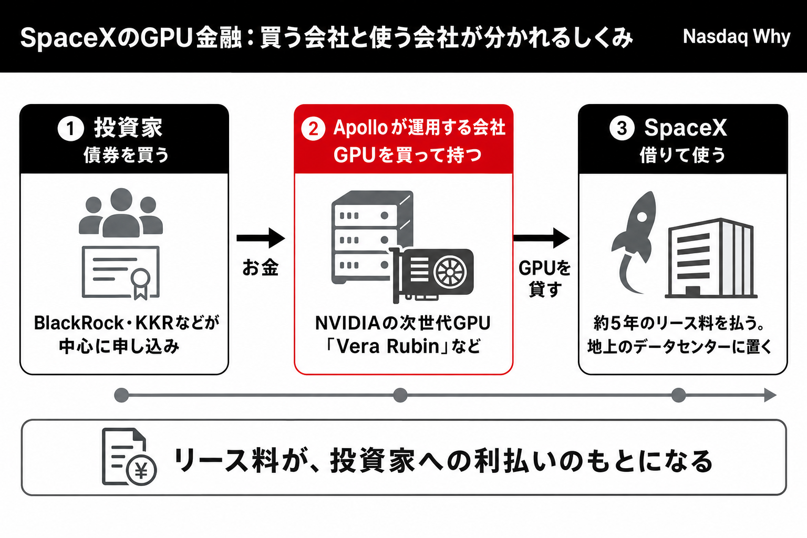
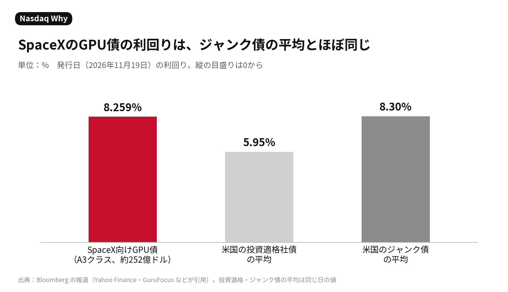

ニュースの深掘り
SpaceXのGPU金融、なぜ利回りはジャンク債並みの8.259%なのか？――約440億ドルの「借りて使う」しくみ
SpaceXが使うAI向けのGPUを買うため、約440億ドルの債券の条件が11月20日に発表されました。最大の部分（約252億ドル）の利回りは8.259%。同じ日の米国の投資適格社債の平均（5.95%）より2%以上高く、ジャンク債の平均（8.3%）とほぼ同じ水準です。SpaceXは格付けの高い会社なのに、なぜここまで高いのか。GPUを「借りて使う」しくみから見ていきます。

10月の約400億ドルと、11月の約440億ドル
SpaceXは10月26日、Apolloが運用する会社との間で、GPUと関連の機器について約400億ドルのファイナンス・リースを結ぶ、拘束力のある約束をしたと発表しました。機器を買うのはApolloの側の会社で、SpaceXはそれを借りて使います。対象はNVIDIAの次世代「Vera Rubin」で、地上の計算設備に使う計画です。
11月20日には、ApolloとGoldman Sachsが、このGPUを買うための約440億ドルの債券（優先と劣後）の条件が決まったと発表しました。申し込みが多く、金額を増やしたとしています。10月の約400億ドルはリースの計画の額、11月の約440億ドルは債券の額で、数字の意味が違います。
最大の部分は利回り8.259%
Bloombergによると、11月19日に3つの部分で約320億ドルの債券が売られ、最大の「A3クラス」約252億ドルの利回りは8.259%でした。
同じ日の米国の投資適格社債の平均は5.95%、ジャンク債（格付けの低い社債）の平均は8.3%でした。SpaceXが自分で出している2031年満期の社債と比べても、約1%高い水準と報じられています。

なぜ利回りが高いのか
SpaceXはMoody'sから投資適格の「Baa1」の格付けを受けています。それでも利回りが高くなった理由として、報道からは次のような点が挙げられます。
- AI向けの貸し出しの市場が、10月に入って急に慎重になった（Semafor）
- GPUは数年で価値が下がりやすいのに、貸し出しは何年も続く
- GPUを持つ会社とSpaceXを分ける、新しく複雑な形の債券である
- 貸し手は、担保のGPUが宇宙に打ち上げられることを心配したと報じられた（Financial Times）
貸し手はGPUの「置き場所」を気にする
Financial Timesは、貸し手がGPUの軌道上への打ち上げを制限しようとしたと報じました。返済が止まったとき、地上にあれば回収して別の会社に貸したり売ったりできますが、宇宙では取り戻せないからです。最終の契約にどんな制限が入ったかは、公開資料では確認できません。
担保つきのお金の借り方では、GPUの値段だけでなく「回収できる場所にあるか」も問われることが分かります。
次に見るもの
リースが始まるのは、GPUなどが届く2027年1〜6月の見通しです。ここからは、発表の日ではなく、機器が実際に届き、計算力が売上を生み始める時期が答え合わせの起点になります。
AI向けの設備は、借りたお金で買う形が増えています。同じような債券の利回りがどこまで下がるか（上がるか）は、AI投資の勢いを測る物差しになります。
NasdaqWhyでは、ニュースの「なぜ？」を一次資料の数字で深掘りしていきます。
出典
- Apollo：Apollo and Goldman Sachs Announce Pricing of $44 Billion SpaceX GPU Financing（2026年11月20日）
- SpaceX：SpaceX Secures $40 Billion in the Largest GPU Financing Ever（2026年10月26日）
- GuruFocus：SpaceX Shares Slip as It Sells $32 Billion of AI Chip Debt（Bloomberg の報道を引用）
- Yahoo Finance：SpaceX Just Raised $32 Billion for AI Chips. Lenders Want Elon Musk to Keep Them on Earth.
- Semafor：SpaceX $40 billion debt deal gets pricey as AI fears spread（2026年10月22日）